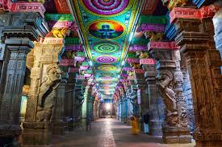
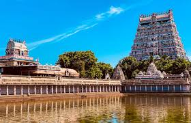
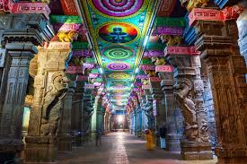
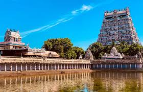

About Meenakshi Amman Temple
The Meenakshi Amman Temple, located in Madurai, Tamil Nadu, is one of the most iconic temples in South India. Dedicated to Goddess Meenakshi (Parvati) and Lord Sundareswarar (Shiva), this temple is a masterpiece of Dravidian architecture. Known for its towering gopurams (gateway towers) covered with thousands of colorful sculptures, it is a spiritual and architectural wonder.
Why Visit?
- One of the most important Shakti Peethas of Goddess Parvati.
- Marvel at the 14 towering gopurams adorned with over 30,000 colorful statues.
- Explore the sacred Hall of Thousand Pillars with mesmerizing sculptures.
- Experience vibrant festivals like the Chithirai Festival, attracting lakhs of devotees.
Location & Travel
Nearest Railway Station: Madurai Junction (~2 km)
Nearest Airport: Madurai Airport (~12 km)
Well connected by road and rail to Chennai, Bangalore, and other South Indian cities.
Visiting Details
- Best Time to Visit: October to March (pleasant weather, festivals).
- Timings: 5:00 AM – 12:30 PM, 4:00 PM – 10:00 PM
- Entry Fee: Free (special darshan tickets available at ₹50–₹100).
Average Travel Expense
A 1–2 day trip to Madurai including food, stay, and darshan may cost around:
- Budget: ₹2,500 – ₹4,000 per day
- Mid-range: ₹4,500 – ₹6,500 per day